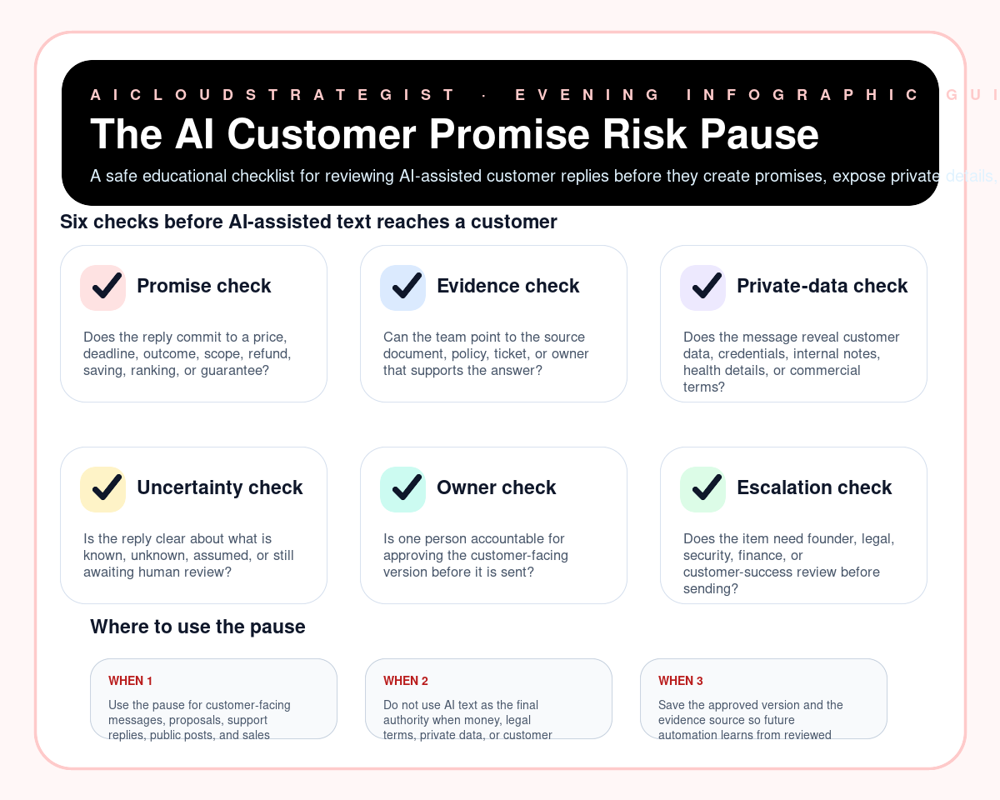

Evening publication · AI customer reply review
The AI Customer Promise Risk Pause
A safe educational checklist for reviewing AI-assisted customer replies before they create promises, expose private details, or hide uncertainty.

Six risk-pause checks
- Promise check: Does the reply commit to a price, deadline, outcome, scope, refund, saving, ranking, or guarantee?
- Evidence check: Can the team point to the source document, policy, ticket, or owner that supports the answer?
- Private-data check: Does the message reveal customer data, credentials, internal notes, health details, or commercial terms?
- Uncertainty check: Is the reply clear about what is known, unknown, assumed, or still awaiting human review?
- Owner check: Is one person accountable for approving the customer-facing version before it is sent?
- Escalation check: Does the item need founder, legal, security, finance, or customer-success review before sending?
Where to use it
- Use the pause for customer-facing messages, proposals, support replies, public posts, and sales promises.
- Do not use AI text as the final authority when money, legal terms, private data, or customer expectations are involved.
- Save the approved version and the evidence source so future automation learns from reviewed examples.
Truth boundary
Educational operations checklist only — not legal, compliance, medical, financial, security, certification, revenue, savings, ranking, customer-result, or guaranteed-performance advice.